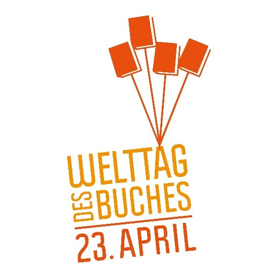

Der Welttag des Buches
Lest ihr auch so gerne Bücher in eurer Freizeit?
Wenn ja ist bald endlich der Tag gekommen, an dem es nur um das Lesen geht.
Am 23. April findet überall in Deutschland der Welttag des Buches statt. Buchhandlungen, Verlage, Bibliotheken, Schulen und Leseratten feiern zusammen das große Bücherfest. Schon seit 1995 wird an diesem Tag die Aufmerksamkeit auf das Lesen, die Bücher und die Rechte der Schriftsteller*innen gelenkt.

Dieser Anlass muss natürlich gefeiert werden und deshalb verschenken Buchhandlungen jetzt auch schon zum 26. Mal eine Millionen Exemplare des Welttagsbuchs „Ich schenk dir eine Geschichte“ an Schüler*innen.

Ich schenk dir eine Geschichte!
Dieses Jahr handelt es sich um den Comicroman „Iva, Samo und der geheime Hexensee“.
Dabei geht es um die Wasserhexen Iva und Samo, die sich auf ein großes Abenteuer begeben. Nachdem Iva zu ihrem zehnten Geburtstag einen Besen geschenkt bekommen hat, endecken die beiden auf ihrer Erkundungstour einen geheimen See.
Nun ist es ihre Aufgabe, einen Monat auf das Gewässer aufzupassen. Plötzllich taucht aber ein Influencer auf und dreht dort ein Video, wodurch der See immer bekannter wird und sich mehr Fans ihm anschließen und ihre Abfälle in der Natur hinterlassen. Iva und Samo schließen sich mit einer Gruppe von Kinder zusammen und schmieden einen gemeinsamen Plan, wie sie das Paradies doch noch retten können.